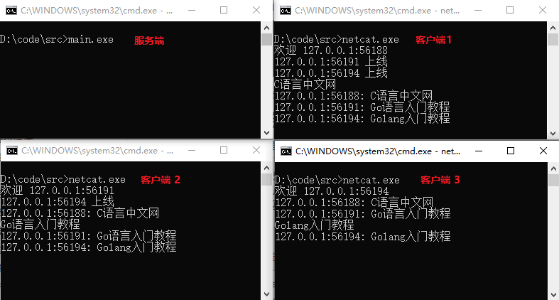

Go语言聊天服务器
本节将带领大家结合咱们前面所学的知识开发一个聊天的示例程序，它可以在几个用户之间相互广播文本消息。
广播器（broadcaster）是用于如何使用 select 的一个规范说明，因为它需要对三种不同的消息进行响应。
主 goroutine 的工作是监听端口，接受连接客户端的网络连接，对每一个连接，它将创建一个新的 handleConn goroutine。
完整的示例代码如下所示：
在使用 handleConn 方法处理 conn 对象的时候，对不同的链接都启一个 goroutine 去并发处理每个 conn 这样则无需等待。
由于要给所有在线的用户发送消息，而不同用户的 conn 对象都在不同的 goroutine 里面，但是Go语言中有 channel 来处理各不同 goroutine 之间的消息传递，所以在这里我们选择使用 channel 在各不同的 goroutine 中传递广播消息。
下面来介绍一下 broadcaster 广播器，它使用局部变量 clients 来记录当前连接的客户集合，每个客户唯一被记录的信息是其对外发送消息通道的 ID，下面是细节：
这里使用一个字典来保存用户 clients，字典的 key 是各连接申明的单向并发队列。
使用一个 select 开启一个多路复用：
下面再来看一下每个客户自己的 goroutine。
handleConn 函数创建一个对外发送消息的新通道，然后通过 entering 通道通知广播者新客户到来，接着它读取客户发来的每一行文本，通过全局接收消息通道将每一行发送给广播者，发送时在每条消息前面加上发送者 ID 作为前缀。一旦从客户端读取完毕消息，handleConn 通过 leaving 通道通知客户离开，然后关闭连接。
handleConn 函数的执行过程可以简单总结为如下几个步骤：
使用
下图中展示了在同一台计算机上运行的一个服务端和三个客户端：
服务端程序
服务端程序中包含 4 个 goroutine，分别是一个主 goroutine 和广播（broadcaster）goroutine，每一个连接里面又包含一个连接处理（handleConn）goroutine 和一个客户写入（clientwriter）goroutine。广播器（broadcaster）是用于如何使用 select 的一个规范说明，因为它需要对三种不同的消息进行响应。
主 goroutine 的工作是监听端口，接受连接客户端的网络连接，对每一个连接，它将创建一个新的 handleConn goroutine。
完整的示例代码如下所示：
package main
import (
"bufio"
"fmt"
"log"
"net"
)
func main() {
listener, err := net.Listen("tcp", "localhost:8000")
if err != nil {
log.Fatal(err)
}
go broadcaster()
for {
conn, err := listener.Accept()
if err != nil {
log.Print(err)
continue
}
go handleConn(conn)
}
}
type client chan<- string // 对外发送消息的通道
var (
entering = make(chan client)
leaving = make(chan client)
messages = make(chan string) // 所有连接的客户端
)
func broadcaster() {
clients := make(map[client]bool)
for {
select {
case msg := <-messages:
// 把所有接收到的消息广播给所有客户端
// 发送消息通道
for cli := range clients {
cli <- msg
}
case cli := <-entering:
clients[cli] = true
case cli := <-leaving:
delete(clients, cli)
close(cli)
}
}
}
func handleConn(conn net.Conn) {
ch := make(chan string) // 对外发送客户消息的通道
go clientWriter(conn, ch)
who := conn.RemoteAddr().String()
ch <- "欢迎 " + who
messages <- who + " 上线"
entering <- ch
input := bufio.NewScanner(conn)
for input.Scan() {
messages <- who + ": " + input.Text()
}
// 注意：忽略 input.Err() 中可能的错误
leaving <- ch
messages <- who + " 下线"
conn.Close()
}
func clientWriter(conn net.Conn, ch <-chan string) {
for msg := range ch {
fmt.Fprintln(conn, msg) // 注意：忽略网络层面的错误
}
}
代码中 main 函数里面写的代码非常简单，其实服务器要做的事情总结一下无非就是获得 listener 对象，然后不停的获取链接上来的 conn 对象，最后把这些对象丢给处理链接函数去进行处理。在使用 handleConn 方法处理 conn 对象的时候，对不同的链接都启一个 goroutine 去并发处理每个 conn 这样则无需等待。
由于要给所有在线的用户发送消息，而不同用户的 conn 对象都在不同的 goroutine 里面，但是Go语言中有 channel 来处理各不同 goroutine 之间的消息传递，所以在这里我们选择使用 channel 在各不同的 goroutine 中传递广播消息。
下面来介绍一下 broadcaster 广播器，它使用局部变量 clients 来记录当前连接的客户集合，每个客户唯一被记录的信息是其对外发送消息通道的 ID，下面是细节：
type client chan<- string // 对外发送消息的通道
var (
entering = make(chan client)
leaving = make(chan client)
messages = make(chan string) // 所有连接的客户端
)
func broadcaster() {
clients := make(map[client]bool)
for {
select {
case msg := <-messages:
// 把所有接收到的消息广播给所有客户端
// 发送消息通道
for cli := range clients {
cli <- msg
}
case cli := <-entering:
clients[cli] = true
case cli := <-leaving:
delete(clients, cli)
close(cli)
}
}
}
在 main 函数里面使用 goroutine 开启了一个 broadcaster 函数来负责广播所有用户发送的消息。这里使用一个字典来保存用户 clients，字典的 key 是各连接申明的单向并发队列。
使用一个 select 开启一个多路复用：
- 每当有广播消息从 messages 发送进来，都会循环 cliens 对里面的每个 channel 发消息。
- 每当有消息从 entering 里面发送过来，就生成一个新的 key - value，相当于给 clients 里面增加一个新的 client。
- 每当有消息从 leaving 里面发送过来，就删掉这个 key - value 对，并关闭对应的 channel。
下面再来看一下每个客户自己的 goroutine。
handleConn 函数创建一个对外发送消息的新通道，然后通过 entering 通道通知广播者新客户到来，接着它读取客户发来的每一行文本，通过全局接收消息通道将每一行发送给广播者，发送时在每条消息前面加上发送者 ID 作为前缀。一旦从客户端读取完毕消息，handleConn 通过 leaving 通道通知客户离开，然后关闭连接。
func handleConn(conn net.Conn) {
ch := make(chan string) // 对外发送客户消息的通道
go clientWriter(conn, ch)
who := conn.RemoteAddr().String()
ch <- "欢迎 " + who
messages <- who + " 上线"
entering <- ch
input := bufio.NewScanner(conn)
for input.Scan() {
messages <- who + ": " + input.Text()
}
// 注意：忽略 input.Err() 中可能的错误
leaving <- ch
messages <- who + " 下线"
conn.Close()
}
func clientWriter(conn net.Conn, ch <-chan string) {
for msg := range ch {
fmt.Fprintln(conn, msg) // 注意：忽略网络层面的错误
}
}
handleConn 函数会为每个过来处理的 conn 都创建一个新的 channel，开启一个新的 goroutine 去把发送给这个 channel 的消息写进 conn。handleConn 函数的执行过程可以简单总结为如下几个步骤：
- 获取连接过来的 ip 地址和端口号；
- 把欢迎信息写进 channel 返回给客户端；
- 生成一条广播消息写进 messages 里；
- 把这个 channel 加入到客户端集合，也就是 entering <- ch；
- 监听客户端往 conn 里写的数据，每扫描到一条就将这条消息发送到广播 channel 中；
- 如果关闭了客户端，那么把队列离开写入 leaving 交给广播函数去删除这个客户端并关闭这个客户端；
- 广播通知其他客户端该客户端已关闭；
- 最后关闭这个客户端的连接 Conn.Close()。
客户端程序
前面对服务端做了简单的介绍，下面介绍客户端，这里将其命名为“netcat.go”，完整代码如下所示：
// netcat 是一个简单的TCP服务器读/写客户端
package main
import (
"io"
"log"
"net"
"os"
)
func main() {
conn, err := net.Dial("tcp", "localhost:8000")
if err != nil {
log.Fatal(err)
}
done := make(chan struct{})
go func() {
io.Copy(os.Stdout, conn) // 注意：忽略错误
log.Println("done")
done <- struct{}{} // 向主Goroutine发出信号
}()
mustCopy(conn, os.Stdin)
conn.Close()
<-done // 等待后台goroutine完成
}
func mustCopy(dst io.Writer, src io.Reader) {
if _, err := io.Copy(dst, src); err != nil {
log.Fatal(err)
}
}
当有 n 个客户 session 在连接的时候，程序并发运行着2n+2 个相互通信的 goroutine，它不需要隐式的加锁操作。clients map 限制在广播器这一个 goroutine 中被访问，所以不会并发访问它。唯一被多个 goroutine 共享的变量是通道以及 net.Conn 的实例，它们又都是并发安全的。使用
go build 命令编译服务端和客户端，并运行生成的可执行文件。下图中展示了在同一台计算机上运行的一个服务端和三个客户端：

关注公众号「站长严长生」，在手机上阅读所有教程，随时随地都能学习。内含一款搜索神器，免费下载全网书籍和视频。

微信扫码关注公众号